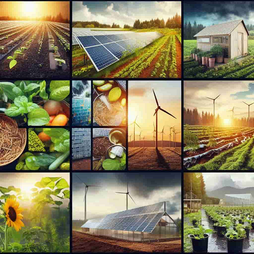

Tipos de Agricultura Sostenible
Existen multitud de corrientes y prácticas agrícolas dentro de la agricultura sostenible. Todas tienen enfoques, metodologías y objetivos específicos que las hacen únicas.
Agricultura orgánica
- Proteger la calidad del suelo utilizando material orgánico y fomentar la actividad biológica.
- Fijación de nitrógeno en suelos mediante leguminosas.
- Suministro indirecto de nutrientes del cultivo utilizando microorganismos del suelo.

Agricultura ecológica
- Uso de abonos naturales: En lugar de utilizar fertilizantes químicos, se utilizan abonos naturales como compost, estiércol o abono verde.
- Prohibición de organismos genéticamente modificados: La agricultura orgánica no permite el uso de semillas o alimentos modificados genéticamente.

Agricultura regenerativa
- Mejora de la salud del suelo: Un suelo saludable es esencial para la producción de alimentos y la sostenibilidad del ecosistema.
- Diversidad de cultivos: La diversidad de cultivos es otro principio clave de la agricultura regenerativa.

Agricultura vertical
- Minimiza el transporte de alimentos, reduciendo la huella de carbono y asegurando productos más frescos y nutritivos.
- Los entornos controlados de la agricultura vertical reducen la exposición a plagas y enfermedades, disminuyendo la necesidad de pesticidas y herbicidas.